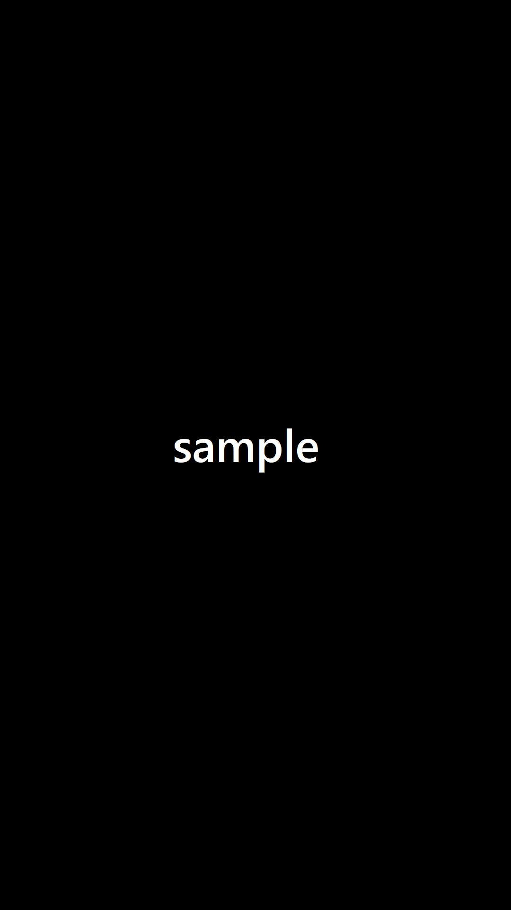

お知らせInformation
newChor OBANDES × Mu Project
Joint Concert

チケット
一般2,500円 学生1,500円 ※未就学児入場不可(全席自由)
本公演のチケットはこちらのLivePocketよりご購入ください。
4月23日（金）20:00よりご購入いただけます。
会場へのアクセス
台東区生涯学習センターミレニアムホール
住所:〒111-8621 台東区西浅草3-25-16 2階
交通アクセス
JR山手線・京浜東北線「鶯谷駅」南口から 徒歩約15分
東京メトロ日比谷線「入谷駅」1番出口からから徒歩8分
つくばエクスプレス「浅草駅」A2番出口から徒歩8分
こちらからGoogleMapによる確認ができます。
新型コロナウイルス感染拡大予防対策について
Mu ProjectおよびChor OBANDESは、公演実施にあたって、政府および自治体等による感染拡大予防のための各種ガイドラインに基づき感染予防対策を徹底し、お客様により良い公演をお届けできるよう、また、安心してご来場いただけますよう、出演者・スタッフをはじめ関係者一同、全力で努めてまいります。
ご来場を予定されているお客様におかれましては、こちらの注意事項をご確認の上、チケットをお求めいただいたうえで、新型コロナウイルス感染拡大予防の趣旨をご理解頂き、手洗いおよび咳エチケットの徹底、消毒液のご利用など感染予防および拡散防止にご協力いただきますようお願い申し上げます。
お問い合わせ
本公演へのお問い合わせはこちらのフォームよりお願いいたします。